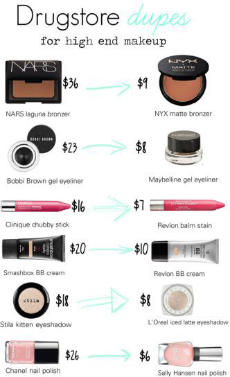

Makeup Dupes
Do You Ever Feel Like Makeup Is Too Expensive? Don't Worry We Got You Covered! Down Below Are Some Dupes. Dupes Are Alternatives.

This Lipstick to the top right is an alternative to the MAC lipstick. The Mac Lipstick is $15.00 and the other lipstick is $2.00

The Revelon "Nearly Naked" is an alternative to the "Naked" skin foundation. The Revelon "Nearly Naked" foundation is $9.99and the "Naked" Skin Foundation is $39.00
THe Maybelline "Eye Studio" eyeliner is an alternative to the Bobby Brown eyeliner. The Bobby Brown Gel Eyeliner is 23$ and the Maybelline "Eye Studio" Gel Eyeliner is 10$
The Physicians Formula "Shimmer Strip" Highlighter is an alternative to the Bobby Brown "Shimmer Brick" Highlighter. The Physicians Formula is $11.95 and the Bobby Brown Highlighter is $42.00.
The Wet n Wild "Lagoon" Eyeshadow is an alternative to the Urban Decay Eyeshadow. The Wet n Wild Eyeshadow is $1.99 and the Urban Decay Eyeshadow is $18.00.